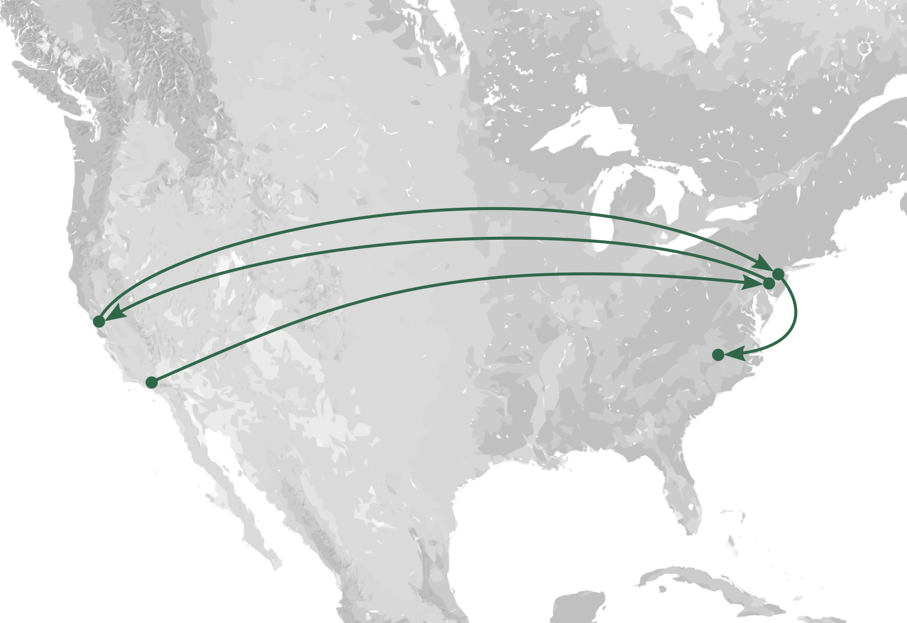

resources
 In July 2019, I will start as an Assistant Professor of Marketing in the Fuqua School of Business at Duke University. My research is at the intersection of machine learning and marketing, focusing on developing scalable and interpretable machine learning methods and understanding the impacts of these methods on individuals and society.
In July 2019, I will start as an Assistant Professor of Marketing in the Fuqua School of Business at Duke University. My research is at the intersection of machine learning and marketing, focusing on developing scalable and interpretable machine learning methods and understanding the impacts of these methods on individuals and society.
I received my Ph.D. in Computer Science at Princeton University, under the advisement of David Blei. When he moved to Columbia University mid-way through my graduate program, I became a visiting student there. After graduating, I worked as a postdoctoral researcher with Barbara Engelhardt and Brandon Stewart, also at Princeton. I hold a B.A. in Computer Science and a B.S. in Engineering from Swarthmore College. I have worked for Pixar Animation Studios and the Yorba Foundation for open-source software; I have also completed research internships with eBay/Hunch and Microsoft Research.
Miscellany
I was born and raised in southern California and then proceeded to hop between coasts for the next decade: I attended college in eastern Pennsylvania, worked in the Bay Area for a few years, and returned east to New Jersey for graduate school. I was excited to find a permanent home in North Carolina.
I married my husband Nathaniel Chaney in 2010 and we backpacked the John Muir Trail (over 200 miles) for part of our honeymoon. We have one child (born 2017) and are expecting a second in early March 2019. All of us love spending as much time outdoors as we can.
In terms of hobbies (for which I have less time than I'd like), I love gardening, cooking and baking, writing letters by hand, painting and drawing, textile crafts (primarily crochet and sewing), and leisure reading. I am an active member of the Church of Jesus Christ of Latter-day Saints and enjoy reading and practicing Stoic philosophy.